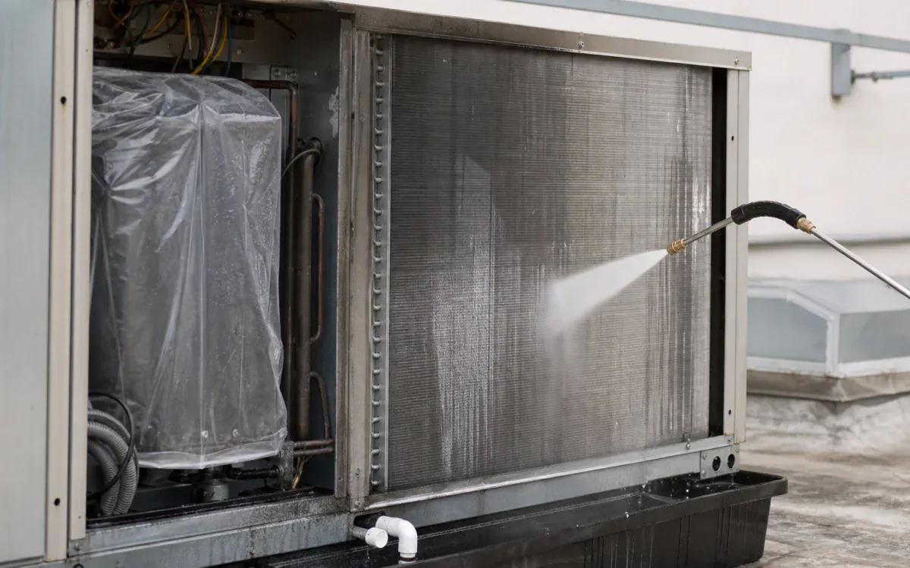
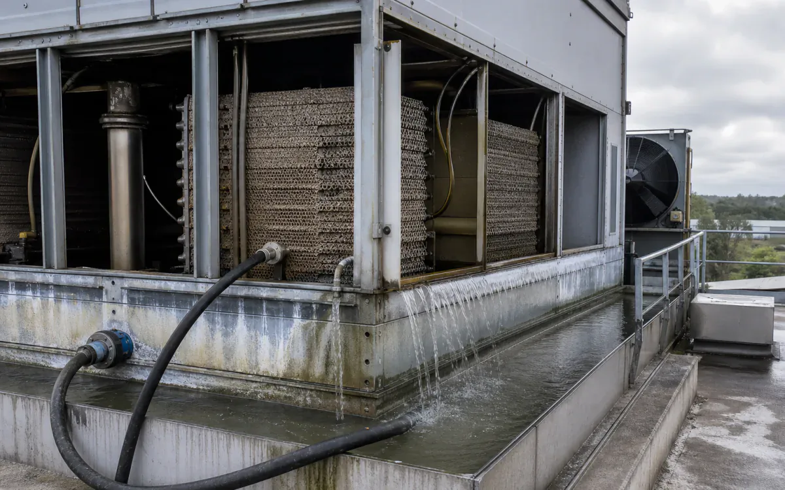
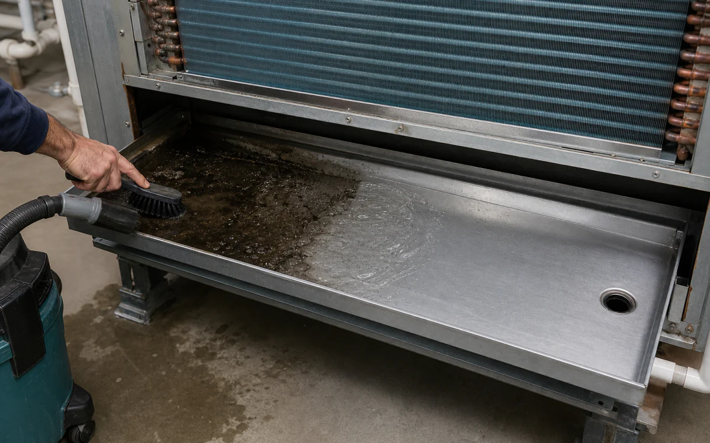

Controlled mineral removal for flow, heat transfer, and water-system work.
HCR breaks down hard carbonate scale and rust. WaterSafe60 helps keep pH, scale, and corrosion under control after the system is clean.
- CleanCooling towers, fill, plate and shell heat exchangers, condensers, boilers, closed loops, coils, strainers, and piping
- RemoveCalcium carbonate, iron oxide, mixed mineral scale, silt, corrosion product, and organic fouling
- Start withTake the equipment offline, circulate or soak with cleaner, drain, rinse, inspect, and restart treatment
- ProductsWaterSafe60, Purgo, VertKleen CIP HCR, VertKleen CIP CR
- HMIS0-0-0 across every VertKleen product offered
- See products, first-test plan, and results
Cleaning chemistry for HVAC / Water Treatment.
Compare the removed buildup, restored flow, cleaner heat transfer, final rinse, and restart time.
See VertKleen resultsWhat matters before you switch chemistry.
Prove removal on the actual soil and surface before replacing the incumbent.
Compare cost per completed job across labor, rinse water, wastewater handling, downtime, and return to service.





VertKleen products for HVAC / Water Treatment.
Match the formula to the soil, surface, and cleaning process.
Remove scale and rust from water-side equipment, rinse it clean, and restart the treatment program.
- Cleaning job
- Remove scale and rust from water-side equipment, rinse it clean, and restart the treatment program.
- Equipment and surfaces
- Cooling towers, fill, plate and shell heat exchangers, condensers, boilers, closed loops, coils, strainers, and piping
- What needs to come off
- Calcium carbonate, iron oxide, mixed mineral scale, silt, corrosion product, and organic fouling
- Products to start with
- WaterSafe60, Purgo, VertKleen CIP HCR, VertKleen CIP CR
- How to clean
- Take the equipment offline, circulate or soak with cleaner, drain, rinse, inspect, and restart treatment
- What to compare
- Finished result, crew time, product, water, passes, downtime, and repeat work.
HVAC / Water Treatment: let one real job decide.
Put VertKleen beside the cleaner you use today. Compare the finished result, time, water, and repeat work before making a wider switch.
Check the surface
| Surface or material | First check |
|---|---|
| Copper, carbon steel, and stainless steel | Test a small, hidden area first and make sure the finish looks right. |
| Aluminum, galvanized steel, tower polymers, and elastomers | Test a small, hidden area first and make sure the finish looks right. |
| Treatment sensors | Test a small, hidden area first and make sure the finish looks right. |
Run a fair side-by-side
Choose one real job
Clean Cooling towers, fill, plate and shell heat exchangers, condensers, boilers, closed loops, coils, strainers, and piping. Target Calcium carbonate, iron oxide, mixed mineral scale, silt, corrosion product, and organic fouling. Take a before photo and note how long the job usually takes.
Check the surface
Start with a small, easy-to-compare area and make sure the finish looks right.
Clean both areas
Use the same crew, tools, area size, and working time for VertKleen and the cleaner you use today.
Count the whole job
Compare the finished surface, crew time, product, water, passes, downtime, and repeat work.